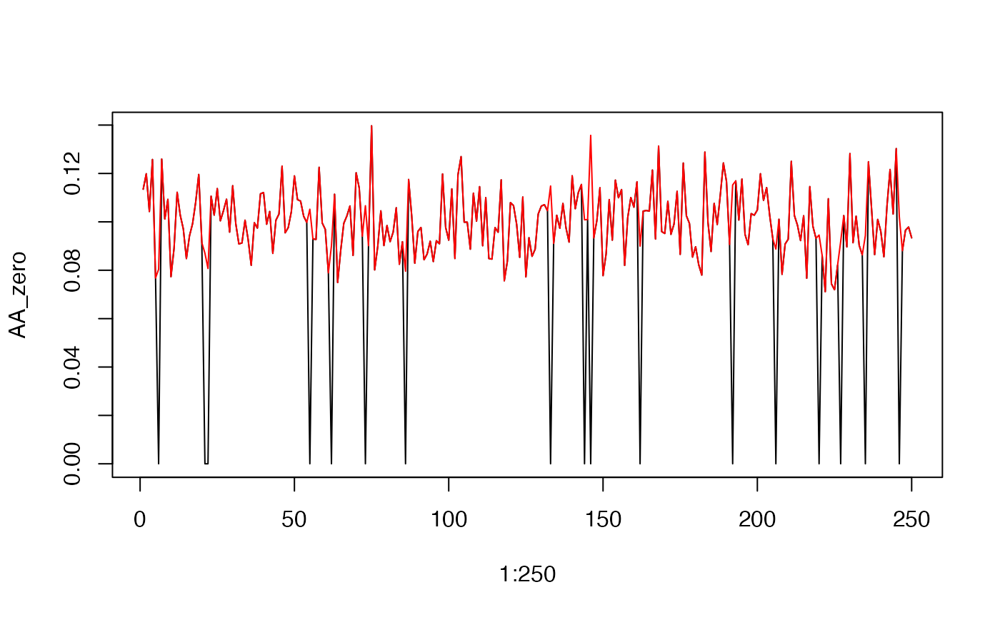
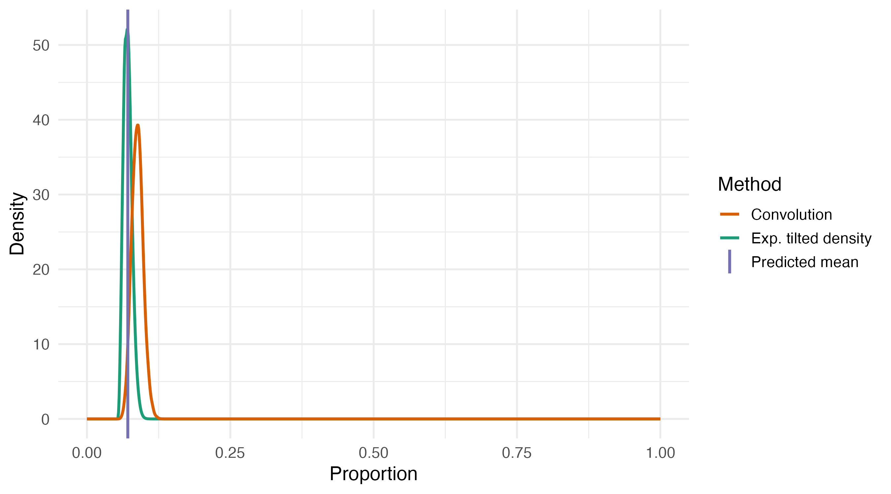

ZIB_example.Rmd
set.seed(123)
library(gamlss)
library(gamlss.dist)
library(tidyverse)
library(boundHTS)
n_obs <- 400
burn_in <- 150
time <- seq_len(n_obs)
nodes <- c("A", "AA", "AB")
beta_params <- function(mean, prec) {
alpha <- prec*mean
beta <- prec*(1-mean)
return(c(alpha, beta))
}This vignette demonstrates how to:
The example is intentionally simple (two bottom-level series and one aggregate),but the workflow generalizes to larger hierarchies.
We consider a two-level hierarchy:
AA, AB)A) and the
complement (B = 1 - A) with noise.All series take values in (0, 1) and are modelled using ZIB distributions. Temporal dependence is introduced on the logit scale.
We want to simulate data that is correlated at the bottom level, and then aggregate the bottom layers to give subsequent layers.
We introduce temporal dependence on the logit scale to ensure that the resulting series remain in (0, 1) after transformation.
# Bottom-level nodes: AA and AB
target_mean <- c(0.10, 0.05) # we want lower proportions for this simulation
mu <- qlogis(target_mean) # work backwards to estimate coefficients
beta1 <- c(0.05, 0.05)
beta0 <- mu * (1 - beta1) # ensures mean is stationary
# AR noise
sd_AA <- sd_AB <- 0.15
rho <- -0.6
Sigma <- matrix(
c(sd_AA^2, rho * sd_AA * sd_AB,
rho * sd_AA * sd_AB, sd_AB^2),
nrow = 2
)
logit_mat <- matrix(NA_real_, n_obs, 2)
logit_mat[1, ] <- rnorm(2)
# Simulate correlated AR(1) dynamics on the logit scale
for (t in 2:n_obs) {
logit_mat[t, ] <-
mu +
beta1 * (logit_mat[t - 1, ] - mu) +
MASS::mvrnorm(1, mu = c(0, 0), Sigma = Sigma)
}
# Remove burn-in
logit_mat <- logit_mat[-seq_len(burn_in), ]
# Transform to proportions
AA <- plogis(logit_mat[, 1])
AB <- plogis(logit_mat[, 2])
# Add in zero inflation
zi_AA <- 0.05 # P(x=0) = 5%
zi_AB <- 0.05 # P(x=0) = 5%
inflate_with_zero <- function(mu, zi) {
u <- runif(length(mu))
y <- numeric(length(mu))
# Structural zero
y[u < zi] <- 0
# Latent AR part
idx <- u >= zi
y[idx] <- mu[idx]
return(y)
}
AA_zero <- inflate_with_zero(
mu = AA,
zi = zi_AA
)
AB_zero <-inflate_with_zero(
mu = AB,
zi = zi_AB
)
plot(1:250, AA_zero, type='l')
lines(1:250, AA, col='red')
plot(1:250, AB_zero, type='l')
# Dependence between bottom-level nodes
stats::cor.test(AA_zero, AB_zero, method = "kendall")##
## Kendall's rank correlation tau
##
## data: AA_zero and AB_zero
## z = -7.1956, p-value = 6.221e-13
## alternative hypothesis: true tau is not equal to 0
## sample estimates:
## tau
## -0.3064404At the next level, we aggregate the bottom-level proportions by averaging them. To allow for additional variability at this level, we generate observations from a Beta distribution centered on the aggregate mean.
# Aggregation at node A with additional variability
A_mean <- 0.5 * AA_zero + 0.5 * AB_zero
kappa_A <- 200 # very tight to reduce noise
A <- stats::rbeta(
n = length(A_mean),
shape1 = kappa_A * A_mean,
shape2 = kappa_A * (1 - A_mean)
)
## Check white noise added to aggregation (+/- 5%)
plot(
A - A_mean,
type = "l",
ylab = expression(A[t] - E(A[t])),
xlab = "Time"
)
abline(h = 0, lty = 2)
# Top-level split
B <- 1 - AWe estimate separate state–space models for:
A)AA,
AB)
forecasts_sims <- forecasts <- data.frame()
nsim <- 1000
n_testyears <- tail(sim_data$Time)
# Create a lagged variable used for modelling
sim_data$AA_lag <- dplyr::lag(sim_data$AA)
sim_data$AB_lag <- dplyr::lag(sim_data$AB)
sim_data$A_lag <- dplyr::lag(sim_data$A)
# Model using gamlss
for(t in seq_along(n_testyears)) {
# Calculate training data
train_idx <- which(sim_data$Time < n_testyears[t])
training_data <- sim_data[train_idx[-1], , drop = FALSE] # drop NA lag
# Fit models
zib_AA <- gamlss(AA ~ AA_lag,
sigma.formula = ~1,
nu.formula = ~AA_lag,
family = BEZI,
data = training_data)
zib_AB <- gamlss(AB ~ AB_lag,
sigma.formula = ~1,
nu.formula = ~AB_lag,
family = BEZI,
data = training_data)
zib_A <- gamlss(A ~ A_lag,
sigma.formula = ~1,
nu.formula = ~A_lag,
family = BEZI,
data = training_data)
if(t==1) {
pred_A <- tibble(`Point Forecast` = predict(zib_AA, type = "response")) %>%
mutate(Node = "A", Time = 2:length(train_idx))
pred_AA <- tibble(`Point Forecast` = predict(zib_AA, type = "response")) %>%
mutate(Node = "AA", Time = 2:length(train_idx))
pred_AB <- tibble(`Point Forecast` = predict(zib_AA, type = "response")) %>%
mutate(Node = "AB", Time = 2:length(train_idx))
forecasts <- bind_rows(forecasts, pred_A, pred_AA, pred_AB) # training data estimates
}
# Get one-step ahead predictions
mu_pred_A <- predict(zib_A, newdata = sim_data[n_testyears[t], ],
what = "mu", type = "response")
mu_pred_AA <- predict(zib_AA, newdata = sim_data[n_testyears[t], ],
what = "mu", type = "response")
mu_pred_AB <- predict(zib_AB, newdata = sim_data[n_testyears[t], ],
what = "mu", type = "response")
# Get precision of one-step ahead forecast
prec_beta_A <- predict(zib_A, newdata = sim_data[n_testyears[t], ],
what = "sigma", type = "response")
prec_beta_AA <- predict(zib_AA, newdata = sim_data[n_testyears[t], ],
what = "sigma", type = "response")
prec_beta_AB <- predict(zib_AB, newdata = sim_data[n_testyears[t], ],
what = "sigma", type = "response")
# Get zero-inflation probability of one-step ahead forecast
zi_beta_A <- predict(zib_A, newdata = sim_data[n_testyears[t], ],
what = "nu", type = "response")
zi_beta_AA <- predict(zib_AA, newdata = sim_data[n_testyears[t], ],
what = "nu", type = "response")
zi_beta_AB <- predict(zib_AB, newdata = sim_data[n_testyears[t], ],
what = "nu", type = "response")
# Generate samples of predictions
sim_pred_A <- rBEZI(n = 100, mu = mu_pred_A,
sigma = sqrt(prec_beta_A), nu = zi_beta_A)
sim_pred_AA <- rBEZI(n = 100, mu = mu_pred_AA,
sigma = sqrt(prec_beta_AA), nu = zi_beta_AA)
sim_pred_AB <- rBEZI(n = 100, mu = mu_pred_AB,
sigma = sqrt(prec_beta_AB), nu = zi_beta_AB)
# Create results dataframes
fc_A <- tibble(Node = "A",
Time = n_testyears[t],
`Forecast precision`= prec_beta_A,
`Forecast zero` = zi_beta_A,
`Point Forecast` = mu_pred_A)
fc_AA <- tibble(Node = "AA",
Time = n_testyears[t],
`Forecast precision`= prec_beta_AA,
`Forecast zero` = zi_beta_AA,
`Point Forecast` = mu_pred_AA)
fc_AB <- tibble(Node = "AB",
Time = n_testyears[t],
`Forecast precision`= prec_beta_AB,
`Forecast zero` = zi_beta_AB,
`Point Forecast` = mu_pred_AB)
forecasts <- bind_rows(forecasts, fc_A, fc_AA, fc_AB)
# Create results dataframes
sim_logit_A <- tibble(Node = "A",
Time = n_testyears[t],
sim_pred = sim_pred_A)
sim_logit_AA <- tibble(Node = "AA",
Time = n_testyears[t],
sim_pred = sim_pred_AA)
sim_logit_AB <- tibble(Node = "AB",
Time = n_testyears[t],
sim_pred = sim_pred_AB)
forecasts_sims <- bind_rows(forecasts_sims, sim_logit_A, sim_logit_AA, sim_logit_AB)
}We estimate a coherent top-series probability density function (PDF)
using a convolution and weighted Beta distributions. As inputs into this
process we use: - the top-level series (A)
estimates - the bottom-level series (AA,
AB) estimates - A fine grid over which the density exists -
Bottom-series weights
We will generate PDFs for the withheld data points to validate our method. You can loop over all years of you wish by updating the code to do so.
z_values <- seq(0, 1, length.out = 1000) # density grid
top_node <- "A"
bottom_nodes <- c("AA", "AB")
weights_bottom <- c(0.75, 0.25)
# Create results df
n_sims <- 100
n_draws <- 100
n_bottom <- 2
rec_list <- lapply(seq_along(n_testyears), function(i) {
rec_local <- tibble() # initialize
t_i <- n_testyears[i]
## Get predictions
P_top <- forecasts %>%
filter(Time == t_i, Node == top_node) %>%
pull(`Point Forecast`)
P_bottom <- forecasts %>%
filter(Time == t_i, Node %in% bottom_nodes) %>%
pull(`Point Forecast`)
## Get precision
prec_top <- forecasts %>%
filter(Time == t_i, Node == top_node) %>%
pull(`Forecast precision`)
prec_bottom <- forecasts %>%
filter(Time == t_i, Node %in% bottom_nodes) %>%
pull(`Forecast precision`)
## Get precision
zoi_top <- forecasts %>%
filter(Time == t_i, Node == top_node) %>%
pull(`Forecast zero`)
zoi_bottom <- forecasts %>%
filter(Time == t_i, Node %in% bottom_nodes) %>%
pull(`Forecast zero`)
## Get Beta parameters
top_params <- beta_params(P_top, prec_top)
bottom_params <- list(
beta_params(P_bottom[1], prec_bottom[1]),
beta_params(P_bottom[2], prec_bottom[2])
)
weighted_samps <- array(NA, dim = c(n_sims, n_draws, n_bottom))
for (b in 1:n_bottom) {
weighted_samps[, , b] <- matrix(
rZIB_4p(
n_mc = n_sims * n_draws,
alpha_point = bottom_params[[b]][1],
beta_point = bottom_params[[b]][2],
zoi_point = zoi_top,
0,
weights_bottom[b]
),
nrow = n_sims,
ncol = n_draws
)
dens <- dbeta(
z_values,
bottom_params[[b]][1],
bottom_params[[b]][2]
)
bottom_tmp <- tibble(
Node = bottom_nodes[b],
Time = t_i,
Z = z_values,
Density = dens
)
rec_local <- rbind(rec_local, bottom_tmp)
}
## Convolution
Density_top <- ZIB_convolution(
z_values = z_values,
alpha_input = bottom_params[[n_bottom]][1],
beta_input = bottom_params[[n_bottom]][2],
zi_input = zoi_bottom[n_bottom],
weighted_samps = weighted_samps,
weights = weights_bottom[n_bottom],
point=TRUE
)
tmp <- tibble(
Node = top_node,
Time = t_i,
Z = z_values,
Density = Density_top
)
rec_local <- rbind(rec_local, tmp)
rec_local # return
})
rec_df <- dplyr::bind_rows(rec_list)
# Define node set for A-group
all_nodes <- c("A", "AA", "AB")
tilted_nodes <- c("A")
# Storage
nu_exp <- exp_samps <- f_tilde_exp <- list()
# Loop over time
for (t in seq_along(n_testyears)) {
t_i <- n_testyears[t]
# Extract convolution densities for these nodes
rec_dens_df <- rec_df %>%
dplyr::filter(Time == t_i) %>%
tidyr::pivot_wider(names_from = Node, values_from = Density) %>%
dplyr::select(Z, dplyr::all_of(tilted_nodes))
# Get predictions
mu_theory <- forecasts %>%
filter(Time == t_i, Node %in% c(top_node, bottom_nodes)) %>%
pull(`Point Forecast`)
# y grid
y_vals <- sort(unique(rec_dens_df$Z))
# Initialize results
nu_star_vec <- numeric(length(tilted_nodes))
tilted_samps <- matrix(NA, nrow = 5000, ncol = length(tilted_nodes))
f_tilted <- matrix(NA, nrow = length(z_values), ncol = length(tilted_nodes))
colnames(tilted_samps) <- colnames(f_tilted) <- tilted_nodes
for (i in seq_along(tilted_nodes)) {
name <- tilted_nodes[i]
# Extract and normalise convolution base density
f_y <- as.numeric(rec_dens_df[[name]])
f_y <- f_y / pracma::trapz(y_vals, f_y)
# Tilt density
tilted_dens <- tilt_density(mu_theory[i], y_vals, f_y, discrete=FALSE) # tilt density
nu_star_vec[i] <- tilted_dens$nu_star
# Tilted density + samples
f_tilted[, i] <- tilted_dens$f_tilted
tilted_samps[, i] <- tilted_dens$tilted_samps
}
# Save per-t results
nu_exp[[t]] <- nu_star_vec
exp_samps[[t]] <- tilted_samps
f_tilde_exp[[t]] <- f_tilted
}The figure presents the predictive density formed by convolving the estimated bottom-level weighted Beta distributions. The resulting density is subsequently tilted so that its expectation matches the corresponding one-step-ahead predictive mean, ensuring coherence between the full predictive distribution and the point forecast.
For a single time point:
